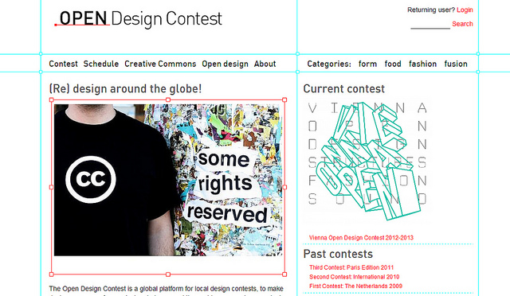

擁抱開放的設計消息集散地
2014-05-23
在世界上的各個角落、在不同時空下的每個人，為了生活，各自面臨各種問題，也有各自的解決方法。如果能有多個腦袋共同思考這些問題和解答時，想必就能從各自的角度出發，擦出更多火花。
現在有了網路，並藉由採用創用CC授權，則更有利於這些設計消息的散佈，這樣的開放平台不僅很適合作為將國際設計新知傳入國內的窗口，也往往會成為介紹國內設計作品和活動給全球知道的管道。
在此便介紹六個採用創用CC授權的平台，各位可以放心的使用這些平台上的設計消息...
2014-05-23
在世界上的各個角落、在不同時空下的每個人，為了生活，各自面臨各種問題，也有各自的解決方法。如果能有多個腦袋共同思考這些問題和解答時，想必就能從各自的角度出發，擦出更多火花。
現在有了網路，並藉由採用創用CC授權，則更有利於這些設計消息的散佈，這樣的開放平台不僅很適合作為將國際設計新知傳入國內的窗口，也往往會成為介紹國內設計作品和活動給全球知道的管道。
在此便介紹六個採用創用CC授權的平台，各位可以放心的使用這些平台上的設計消息...
2014-04-15
我在去年七月的時候進來台灣創用CC計畫，今年一月的時候結束，時間大約半年，期間主要的工作是參與創用CC計畫在台灣設計師週的享用設計展，以及新版的創用CC網站設計。
一開始申請的時候，緣於申請的要求，對於著作權、智財權爲何著實下了一番工夫去了解。期間得力最多的是中研院劉尚志的一篇文章〈論智慧財產權法的一般理 論〉，我印象深刻的一段大意若此：「著作權、智財權是人類文明的智慧結晶。人類智識創造的進步，建立在一代一代人們過往的根基上，就全人類的福祉而言，具 有公共財的特性， 所以我們不應該把著作智財相關權利視為私有的所有權，而應當當作一種暫時性的租用契約，用意是保障創新創作者可以藉其創造獲得合理報酬。所以，任何著作 權、智財相關權利
2014-03-27
2014-02-25
在應徵實習生的時候，覺得5個月很長，想不到轉眼間也就結束了。
當時完全沒有想到這份工作會牽涉到這麼多有趣又新鮮的活動，更沒想到自己會因為「創用CC」授權而和設計產生關係，而且也因為這份工作認識了各有所長的好夥伴，真的是非常充實又讓人很有成就感的實習經驗。
在此將實習的心得感想分為以下幾個部分來分享。
[關於開放設計案例]
以往比較熟悉創用CC在圖片、音樂、教育資源的運用，想不到在設計也有這麼多元的結合。
一開始蒐集案例時，其實連「設計」的範疇都不太確定，蒐集過程中才知道原來設計在生活中無所不在，而且有一些新的發展(如3D列印、互動設計)也是在案例中才知道的，這才發現自己真的是個井底之蛙，有些消息實在是落後別人太多了。
...
2013-11-15
2013-08-15
2013-08-02
「設計正在進行一場革命。科技不僅賦權給更多人有能力創造及普及設計，專業人士與熱衷者也能使用它去和世界分享他們的作品。開放設計帶來的改變發生在所有事情上，從傢俱，一直到設計者如何維生…..」
第一場「開放設計競賽」(Open Design Contest)始於2009年，當時只是實驗性質的，被稱為「無限設計競賽」，希望透過競賽，相互交流開放設計背後的想法，同時也凸顯今日的科技工具有辦法將真正的物品數位化。由於此競賽獲得好評，便持續在各地舉辦，吸引更多人對於「開放設計」產生興趣。
2013-07-22
「一個令人感到不適的事實是，幾乎所有我們今日稱之為「建築」的，都是為了世界人口中最有錢的百分之一所做的商業設計。」--Alastair Parvin
Wikihouse的創辦人Alastair Parvin，是英國倫敦「00:/」建築合作團隊的一員，自2011年起開始這個計劃。
2013-07-12
隨著3D列印技術等各種數位製造(digital fabrication)工具的蓬勃發展，意味著使用者自行製作獨特個人化產品世界的機會大幅提升，然而現有的電腦輔助設計(CAD)系統過於專業和複雜，常讓沒經驗的使用者不知如何操作，導致數位製造過程仍無法普及。
Greg Saul是對於挑戰消費者和設計師界線感興趣的設計師、工程師，他相信個人生產是改變設計面貌的基礎。出生於紐西蘭威靈頓，他在維多利亞大學念工業設計時遇到現在的合作對象Tiago Rorke，由於都對「互動、數位製造、電腦運算設計」三者的可能性感到好奇，便一起組成了[[http://diatom.cc/|Diatom設計工作室]]，希望能研發開放資源設計軟體讓所有人都能參與設計。
2013-06-28
2008年，德國設計師Cecilia Palmer成立的時尚品牌Pamoyo引起眾多矚目。 這是第一個強調使用對生態友善的素材以及再生資源的綠色品牌，並且它秉持著開放資源的精神，公開服飾版型於網路上，有利於設計成品能融合在地不同文化特色，或是展現出自己的獨特風格。透過這個品牌，讓設計不只是淺層表面意義的服裝樣式，而是深度傳達出社會公益與價值，及尊重環境、強調創意與公平之態度。本網站採取創用CC「姓名標示─相同方式分享」授權，使用者在標示著作者的情況下，可以下載版型設計圖使用和改造，並將成品用相同的授權方式再次分享。